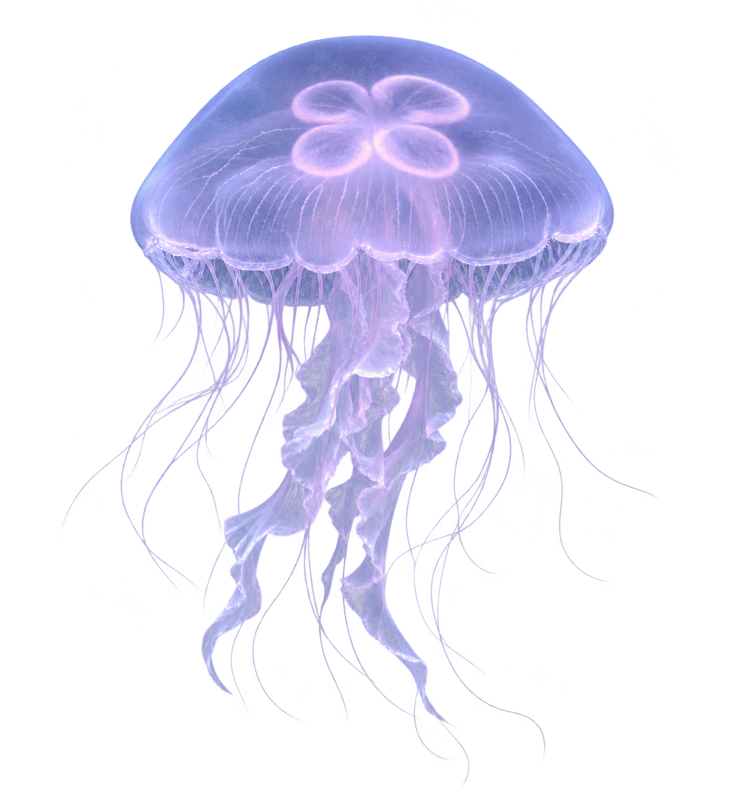

安静、深蓝，适合第一轮专注。
MONDAY · 11月 23日
我的水族箱
READY TO DIVE
给自己一段不被打扰的潮汐时间
锁定手机后，水族箱会替你照看时间。完成一轮禅定，收下新的鱼苗。
ACTIVE SCENE / 04
月光海沟
RECENT DIVES
最近的禅定记录
2311月
深海工作流25 分钟 · 月光海沟
+ 80 ◈
完成
2211月
读完这一章50 分钟 · 珊瑚花园
+ 140 ◈
完成
✦
ALL SCENES OPEN
全部水域已开放
四片水域都可以用来开始禅定。
SCENE ARCHIVE / 08
选择一片潮汐
不同的水域，适合不同的专注节奏。场景会在锁定期间成为你的唯一屏幕。
明亮的浅海，适合下午灵感。
彩色电流，适合创意冲刺。
还没有人抵达过的北方水域。
NURSERY / 23 RESIDENTS
把下一位住客带回家
用完成禅定获得的金币，购买鱼苗并投放到你的水族箱。
当前余额◈ 1,280

FEATURED FRY / 07
月光水母
在深蓝里缓慢呼吸的发光住客。投放后会跟随你的专注进度长大。
夜行发光稀有
橘子小丑鱼
热情 · 常见粉珊瑚鱼
慢热 · 稀有薄荷蓝鱼
好奇 · 常见金色灯笼鱼
安静 · 传说皇家神仙鱼
优雅 · 稀有黄尾刺尾鱼
明亮 · 常见狮子鱼
缓慢 · 传说银色鲹鱼
群游 · 常见曼达林鱼
谨慎 · 传说花马蹄鱼
优雅 · 稀有长吻蝶鱼
灵巧 · 稀有绿斑河豚
好奇 · 传说皇家丝绒鱼
安静 · 稀有火焰虾虎鱼
警觉 · 常见彩纹七彩神仙
温和 · 稀有海马
安静 · 传说扇贝
安静 · 常见蓝贻贝
群居 · 常见牡蛎
安静 · 稀有鲍鱼
慢热 · 稀有海螺
慢速 · 常见寄居蟹
好奇 · 常见FOCUS RULES / ANDROID
禅定时，你想留下什么
这是锁定态的规则预览。确认后会映射到 Android 的专注模式与通知策略。
LOCKDOWN PROFILE
深海专注
锁定时长完成后获得金币奖励
25 分钟
锁定期间允许电话和短信始终可以进来
通知白名单只展示选中 App 的摘要
备忘录✓
天气✓
微信✓
LOCK SCREEN PREVIEW
9:41▴ 100%
专注进行中24:59月光海沟 · 25 分钟
今日天气18° 多云
备忘录产品灵感 · 2 条
电话 / 短信保持可用